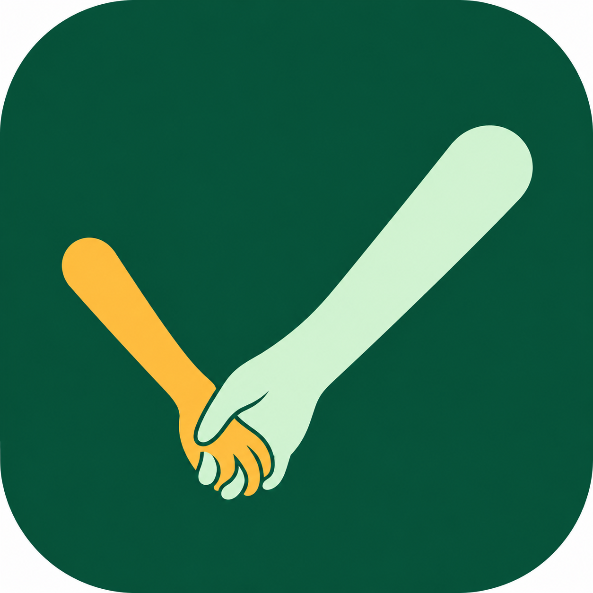

让携手更适合你的工作习惯
调整界面、窗口和启动方式
Ctrl + Alt + N
为新增任务中的 AI 整理配置模型连接
快速添加和所有 AI 整理统一使用此默认模型。
全局默认模型修改后立即保存；供应商的模型目录和连接设置需点击「保存连接设置」。
默认模型请在上方「全局默认模型」选择；这里维护该供应商可用的模型目录。
备份任务和来源记录，或从备份合并恢复
按截止时间提前提醒；没有截止时间时按开始时间，未设置时间时不提醒